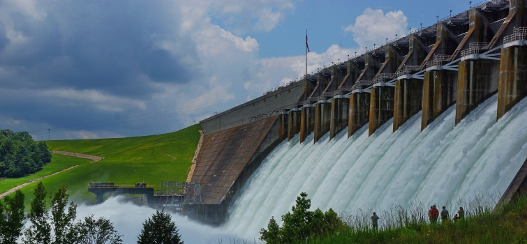

-

Info graphic about the water-energy nexus and the trends that affect it

Takeaways from the 2015 DOE Energy-Water Nexus Roundtable Series
- 
Energy-water nexus track for bilateral diplomatic R&D initiative in the U.S. and China

Water-Energy Nexus: Challenges and Opportunities Report June 2014
Present day water and energy systems are interdependent. From providing cooling to power plants to irrigating crops for biofuels, multiple phases of energy production and electricity generation use water. Conversely, extracting, conveying, and delivering water of appropriate quality for diverse human uses requires energy, and treating wastewaters prior to their return to the environment requires even more. Despite their interdependency, energy and water systems have been developed, managed, and regulated independently. The complexity at the energy-water nexus demands a coordinated and integrated DOE approach.
The Energy-Water Nexus Crosscut Team (originally called the Water-Energy Tech Team) was formed in late 2012 to address these issues. In June 2014, DOE published The Water-Energy Nexus: Challenges and Opportunities, which laid the foundation for subsequent work for the Department. In 2015, DOE hosted an Energy-Water Nexus Roundtable Series that engaged stakeholders from industry, academia, utilities, state and local governments, National Laboratories, and other federal agencies in focused discussions about the energy-water nexus. These six roundtable discussions brought up a number of challenges and opportunities in DOE’s mission space in the areas of fuels, water infrastructure, electricity, and systems integration. Also, in 2015, DOE launched the energy and water track of the U.S. China Clean Energy Research Center , with the U.S. side led by U.C. Berkeley.
Current work and the planned path forward by the Department in the energy-water nexus: 1) builds and deploys a DOE mission critical data, modeling, and analysis platform to improve understanding and inform decision-making for a broad range of users; 2) strategically targets crosscutting technology research, development, demonstration and deployment opportunities within the system of water and energy flows; and 3) is informed and supported by focused policy analysis and outreach and stakeholder engagement. Cross-Departmental work is in four areas:
- Data, modeling, and analysis (DMA) helps to understand current energy system vulnerabilities while exploring complex systems dynamics for subsequent applications in planning the resilient, efficient, and competitive energy-water systems of the future.
- Technology research development, demonstration, and deployment (RDD&D) produces technology solutions and infrastructure options to address vulnerabilities and increase resilience, and it offers the possibility of efficiency improvements and cost reductions to facilitate accelerated technology deployment.
- Policy analysis informs understanding of the motivation and barriers to addressing vulnerability and resilience that can impact diverse regional, national, and global stakeholders.
- Outreach and stakeholder engagement strengthens this overall collection of proposed activities by sharpening understanding of end-user needs, regional considerations, and other data sets, while helping to identify pathways and potential partners for deployment and implementation.